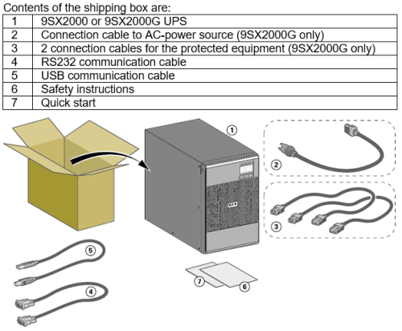
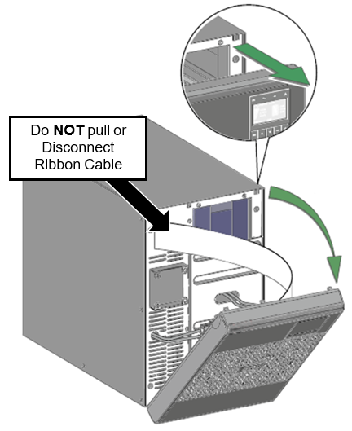
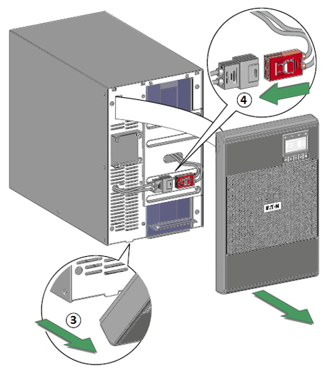
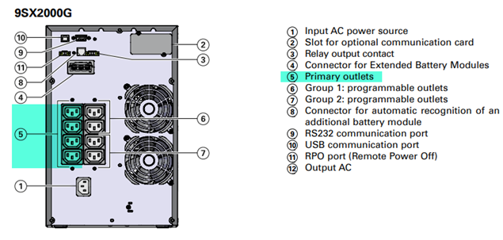
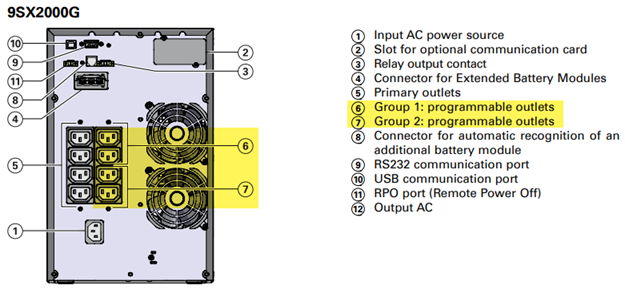
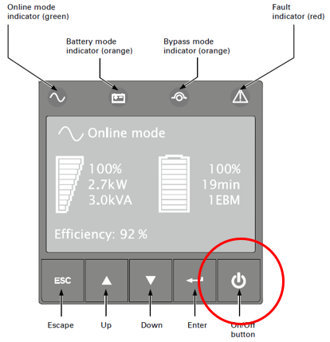
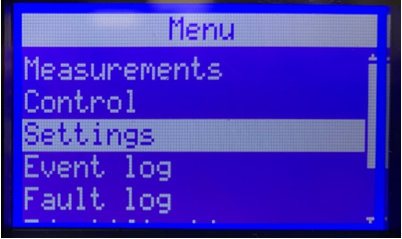
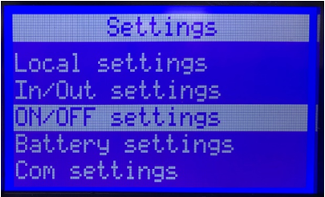
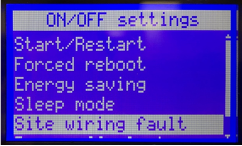
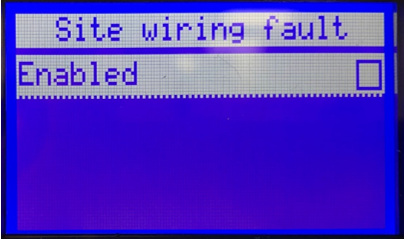

Eaton 9SX2000 UPS (Uninterruptible Power Supply)/PDU (Power Distribution Unit) Installation and Operation
 Setup Procedure
Setup Procedure
Parts and Materials Required

Time Required
- 45 Minutes
Procedure
Caution—Do not connect the UPS power cord to utility until after installation is completed.
Note: ALL Fusion Installs require the Output Voltage on the UPS to be set at 220V.
- Find a flat and stable working surface.
- Unbox the contents of the Eaton 9SX2000/g UPS box on to the working surface.
- Unwrap the Eaton 9SX2000/g UPS.
- Unlock the holders on the upper part of the front panel.
- Rotate the front panel away from the front of the UPS.
Note: A ribbon cable connects the LCD control panel to the UPS. DO NOT PULL OR DISCONNECT THE RIBBON CABLE.

- Remove the lower part of the front panel.
- Connect the internal battery connector.

- Reinstall the UPS front cover:
- Place the bottom of the front panel into the frame.
- Make sure the ribbon cable is protected.
- Rotate the cover up and into place.
- Move the UPS to it's final position next to the Panther.
- If this UPS is replacing an old unit, remove the old UPS and set aside.
- Install the new UPS in place of the old unit.
- Plug the instrument into any of the outlets in the primary outlet array. Only the instrument should be in this primary outlets array.
Caution—DO NOT TURN ON THE PROTECTED EQUIPMENT.

- Connect the USB cable from the UPS to the Panther PC.
- Make any necessary provision for cord retention and strain relief.
- Connect the UPS power cord to the AC Alternating current power source. All other peripherals can occupy any outlet in Group 1 or 2.

Note—The 9SX2000G uses a separate power cord that must be plugged into the back panel of the UPS. 
- The UPS display will illuminate and display "UPS initializing...".
Note: The UPS starts charging the battery as soon as it is connected to the AC power source, even if the On/Off button on the UPS control panel is not pressed. The UPS requires 24 hours of charging before it can provide the rated backup time.
- Press the On/Off button for at least 2 seconds. The UPS front panel display will show "UPS starting...".

- Check the UPS front panel display for active alarms or notices. Resolve any active alarms before continuing. If the Fault indicator is on, do not proceed until all alarms are clear. Correct the alarms and restart if necessary.
Note: See Site Wiring Fault Alarm configuration below.
- Verify that the Online Mode indicator illuminates solid, indicating that the UPS is operating normally, and any loads are powered and protected. The UPS should be in Normal Mode.
Site Wiring Fault Alarm
If the Site Wiring Fault Alarm is triggered, verify that the polarity at the wall outlet is correct. If the polarity of the wall outlet is in reversed, please have the wall outlet polarity corrected by a qualified person.
- If the polarity is correct and the alarm still sounds, proceed with step 3 to disable the Site Wiring Fault Alarm.
- Procedure for disabling the Site Wiring Fault Alarm:
- From the Start screen, press the ↓ button until Settings appears, then press the ⤶ button.

- Press the ↓ button until ON/OFF settings appears, then press the ⤶ button.

- Press the ↓ button until Site Wiring Fault Alarm appears, then press the ⤶ button.

- Press the ⤶ button to remove the ✓, then press the ⤶ button.

- Press the ESC button until the Start screen is displayed.
Note: Continue to Setting the Input Voltage Range for the Eaton 9SX2000 UPS.
 button at the top of the page to send feedback, comments, or change requests.
button at the top of the page to send feedback, comments, or change requests.